| Catalog | sigma175 |
|---|---|
| Author | Jaqcui Gilchrist, 2018/09/27 |
| Description | vary tau/sigma: sigma0=175, tau0=96.25 |
| Fault/Def Model | Fault Model 3.1, Geologic |
| Slip Velocity | 1.0 m/s |
| Average Element Area | 1.35 km^2 |
| Length | 9,349,810 events in 838,066 years |
| Frictional Params | a=0.001, b=0.008, (b-a)=0.007, ddotEQ=1 |
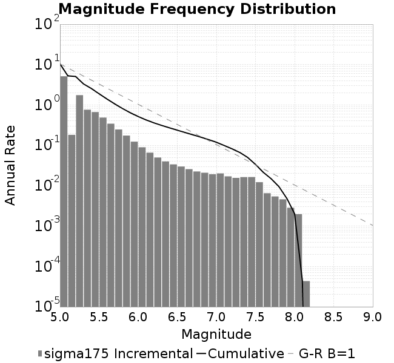
| Scatter | 2-D Hist |
|---|---|
| 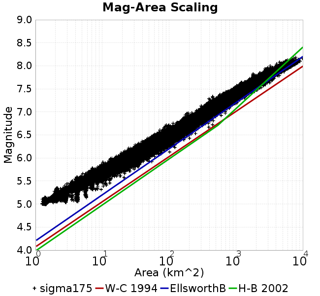 | |
| Scatter | 2-D Hist |
|---|---|
| 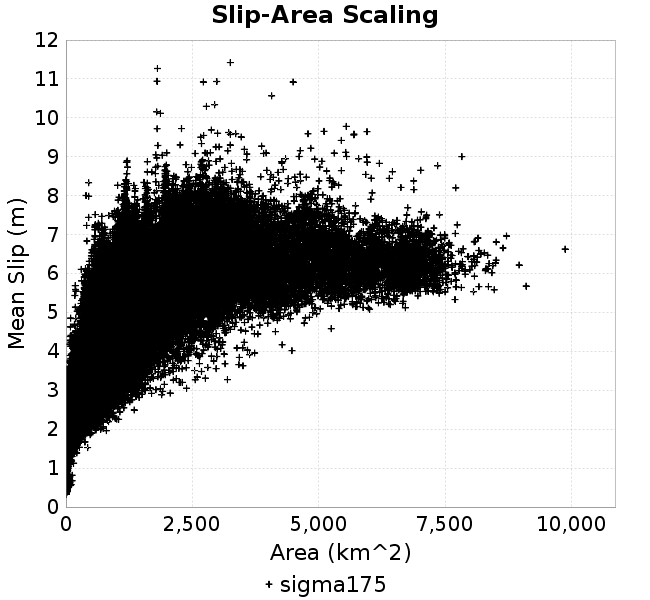 | 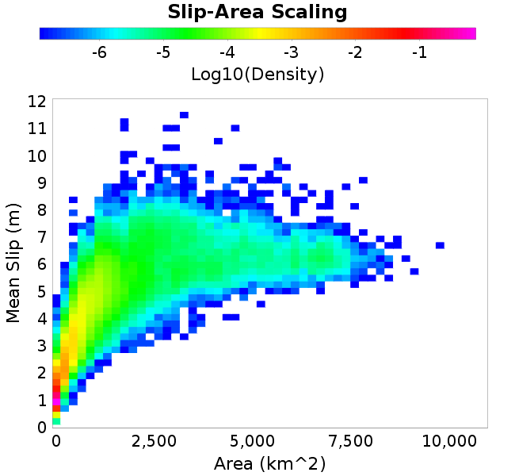 |
| Scatter |  |
|---|---|
| Distance/Velocity | 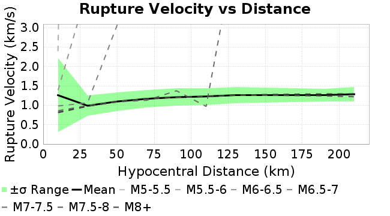 |
| M≥6 | M≥6.5 | M≥7 | M≥7.5 |
|---|---|---|---|
 |  |  | 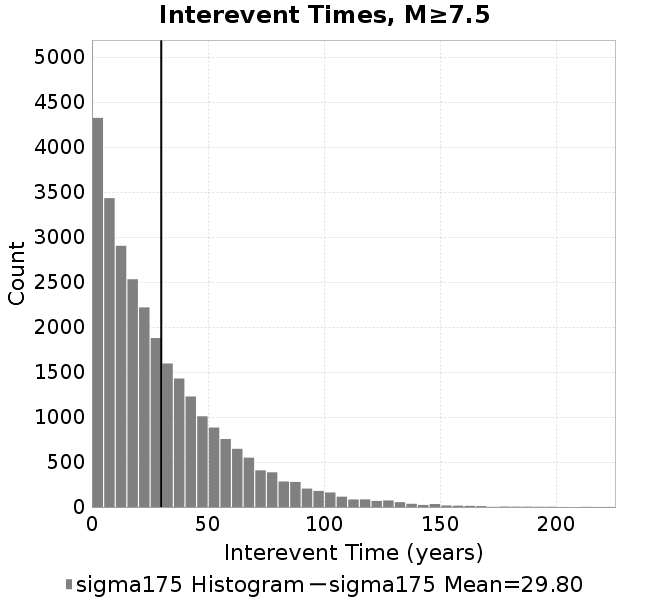 |
| M≥6 | M≥6.5 | M≥7 | M≥7.5 | |
|---|---|---|---|---|
| Elements |  |  | 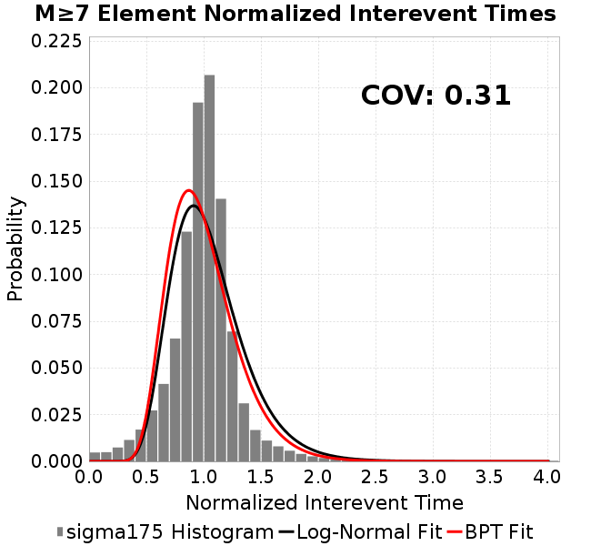 |  |
| Subsections |  | 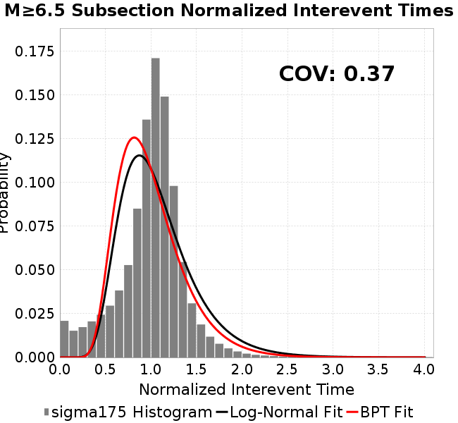 | 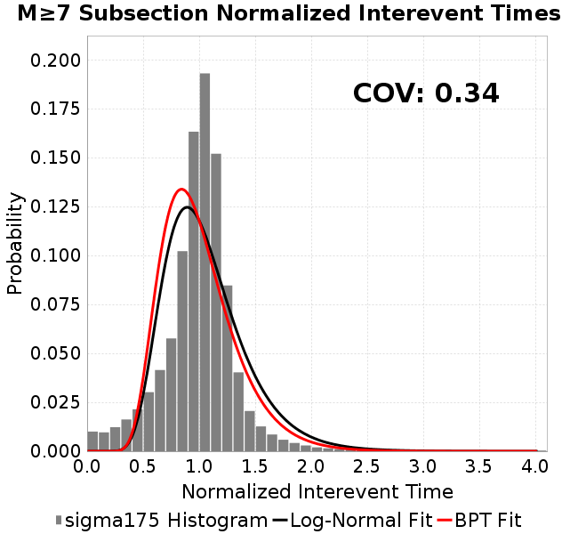 | 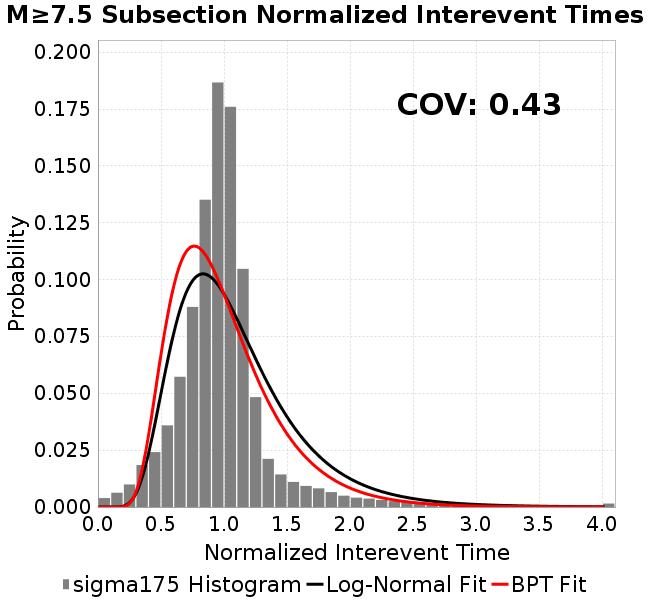 |
| Sections | 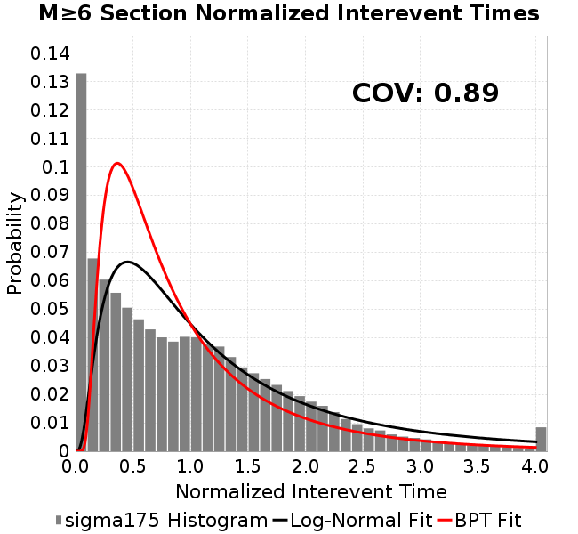 | 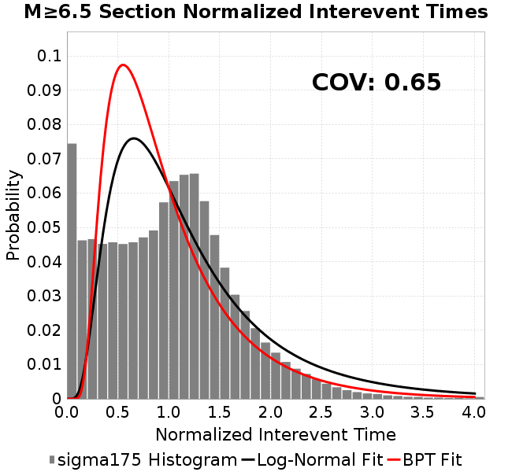 | 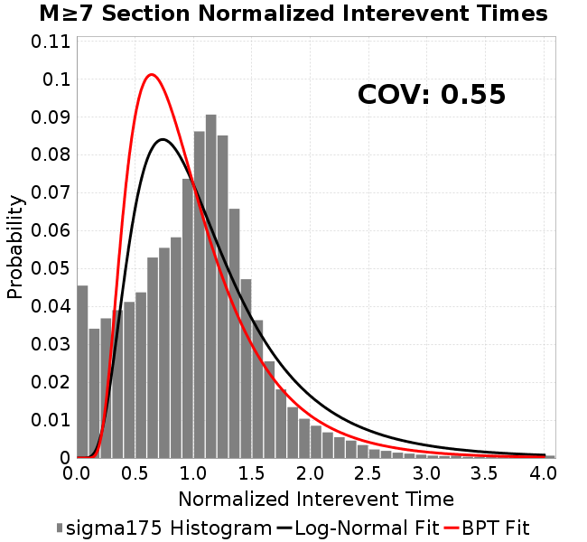 | 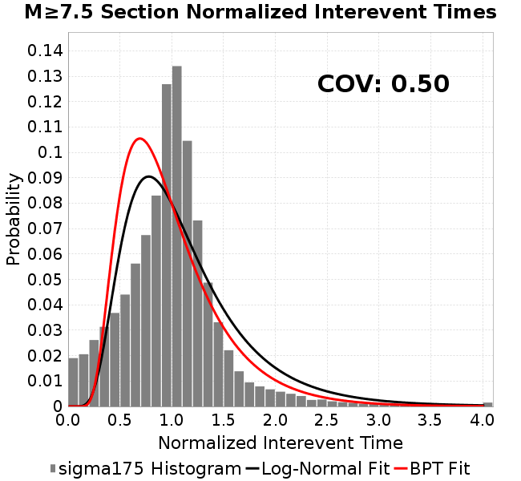 |
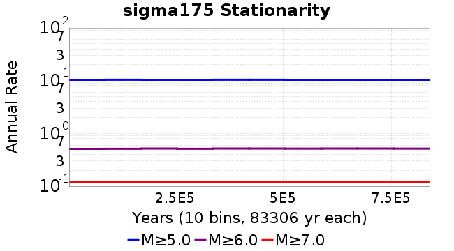
| Min Mag | Scatter | 2-D Hist |
|---|---|---|
| M≥6.0 | 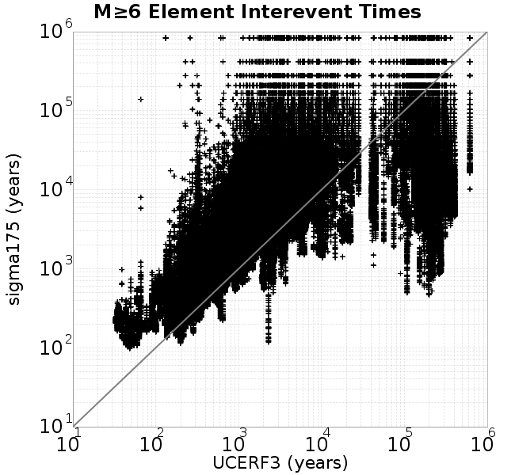 | 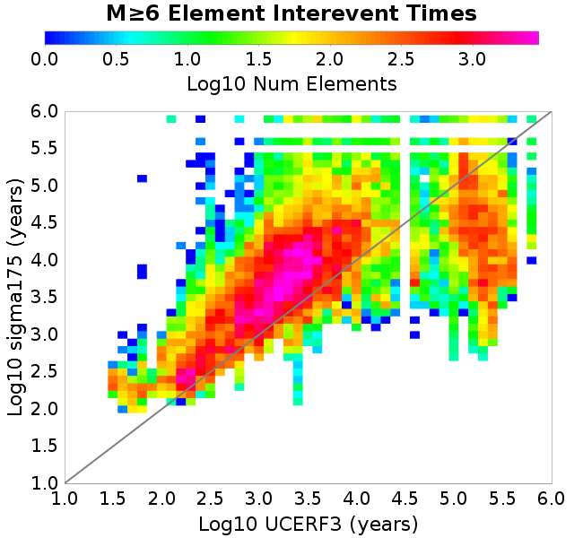 |
| M≥6.5 |  | 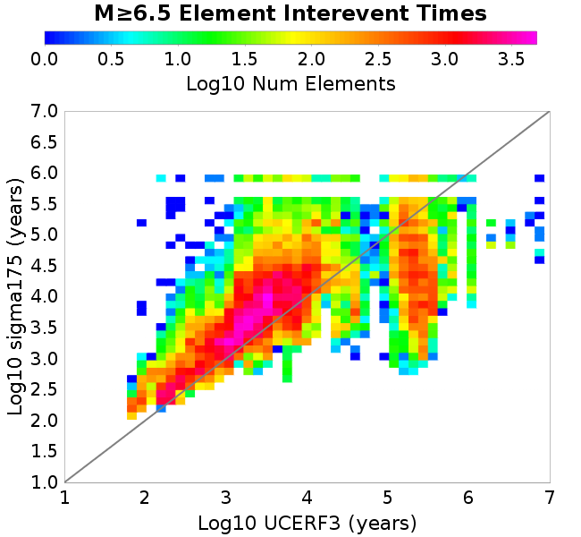 |
| M≥7.0 |  | 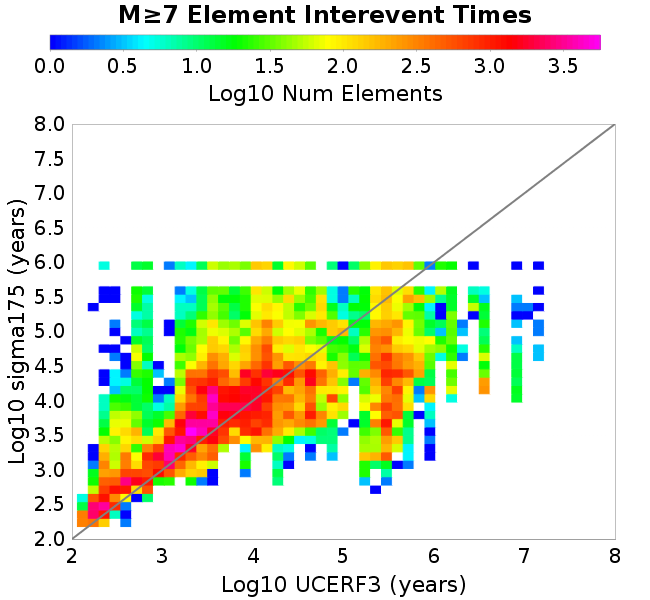 |
| M≥7.5 | 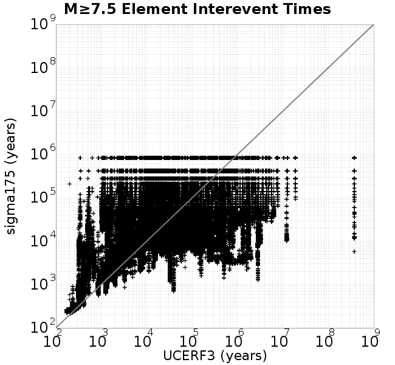 | 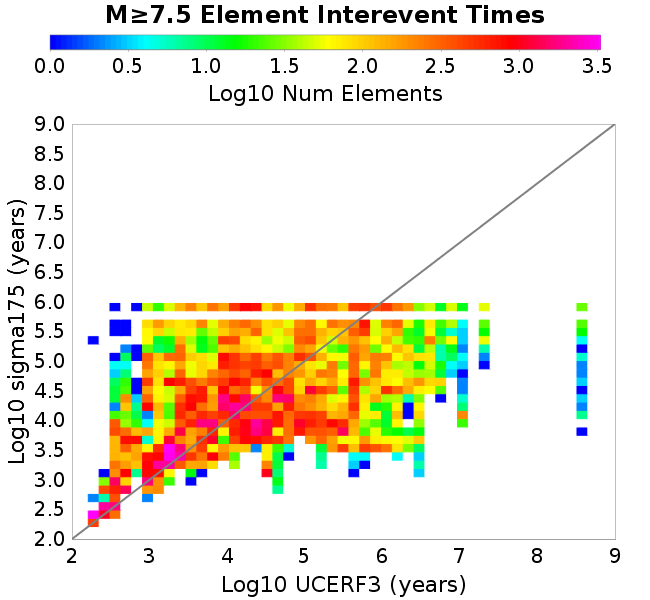 |
Subsections participate in a rupture if at least 20.0 % of its area ruptures
| Min Mag | Scatter | 2-D Hist |
|---|---|---|
| M≥6.0 |  | 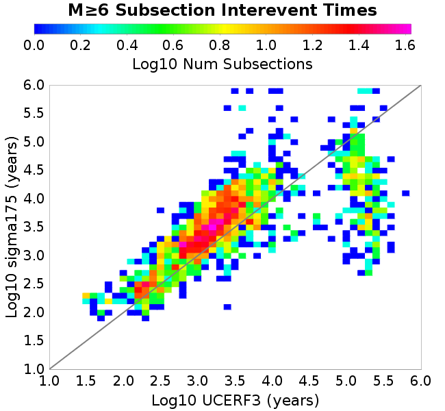 |
| M≥6.5 |  | 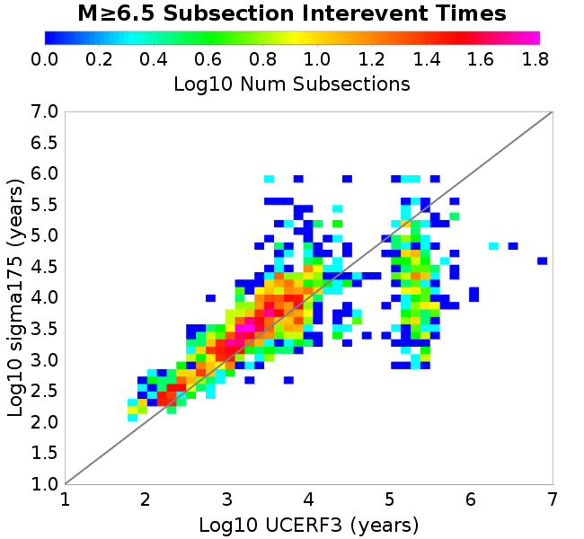 |
| M≥7.0 |  |  |
| M≥7.5 |  |  |
These plots use the 5 paleoseismic sites identified in Biasi & Scharer (2019) on the Hayward, N. SAF, S. SAF, and SJC faults. By default, a rupture is counted at a paleo site if the nearest element (at the surface) slips any amount. We also alternatively apply a probability of detection model. Those results are marked as 'Prob. Filtered'.
Paleoseismic sites table:
| Site Name | Data MRI (yr) | Data Annual Rate | Catalog MRI (yr) | Catalog Annual Rate | Catalog Occurences | Prob Filtered Catalog MRI (yr) | Prob Filtered Catalog Annual Rate | Prob Filtered Catalog Occurences |
|---|---|---|---|---|---|---|---|---|
| HOG | 191.00 | 0.005235602 | 626.05 | 0.001597314 | 1331 | 632.78 | 0.0015803362 | 1316.85 |
| FRA | 119.00 | 0.008403362 | 204.23 | 0.0048963334 | 4079 | 208.26 | 0.0048017087 | 4000.19 |
| COA | 181.00 | 0.005524862 | 308.87 | 0.0032375706 | 2697 | 319.10 | 0.0031338455 | 2610.61 |
| SCZ | 106.00 | 0.009433962 | 214.57 | 0.004660376 | 3882 | 224.71 | 0.004450102 | 3706.79 |
| TYS | 329.00 | 0.0030395137 | 609.22 | 0.0016414435 | 1368 | 632.34 | 0.0015814371 | 1318 |
| TOTAL | 31.61 | 0.0316373 | 62.37 | 0.016032288 | 13356 | 64.33 | 0.015544607 | 12949.66 |
Paleoseismic Plots:
| 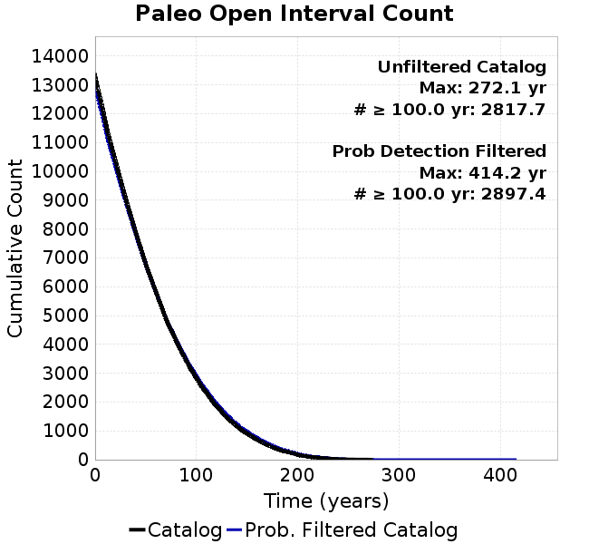 |  |
|---|
Open interval probabilities table:
| Open Interval (yr) | Catalog Probability | Catalog Poisson Probability | Prob. Filtered Catalog Probability | Prob. Filtered Catalog Poisson Probability | Data Poisson Probability |
|---|---|---|---|---|---|
| 10.00 | 0.9907181 | 0.8518687 | 0.9913104 | 0.8560332 | 0.72878754 |
| 20.00 | 0.966287 | 0.7256803 | 0.9682466 | 0.7327929 | 0.53113127 |
| 30.00 | 0.92751 | 0.6181843 | 0.9315138 | 0.6272951 | 0.3870819 |
| 40.00 | 0.87739086 | 0.52661186 | 0.8838374 | 0.53698546 | 0.28210047 |
| 50.00 | 0.8176217 | 0.44860417 | 0.8265571 | 0.45967737 | 0.2055913 |
| 60.00 | 0.75407225 | 0.38215184 | 0.7655659 | 0.3934991 | 0.14983238 |
| 70.00 | 0.68053573 | 0.3255432 | 0.69454813 | 0.33684832 | 0.10919597 |
| 80.00 | 0.61145616 | 0.27732006 | 0.62755495 | 0.28835335 | 0.079580665 |
| 90.00 | 0.5408033 | 0.23624027 | 0.5586169 | 0.24684006 | 0.057997398 |
| 100.00 | 0.4731937 | 0.2012457 | 0.49235117 | 0.2113033 | 0.04226778 |
| 110.00 | 0.4094291 | 0.17143491 | 0.42886856 | 0.18088265 | 0.030804234 |
| 120.00 | 0.3461434 | 0.14604004 | 0.36597162 | 0.15484156 | 0.022449743 |
| 130.00 | 0.28763017 | 0.124406934 | 0.30783013 | 0.13254951 | 0.016361093 |
| 140.00 | 0.23730074 | 0.10597837 | 0.25647116 | 0.11346679 | 0.011923761 |
| 150.00 | 0.1943092 | 0.09027965 | 0.212072 | 0.09713134 | 0.008689889 |
| 160.00 | 0.15478286 | 0.07690641 | 0.17116193 | 0.08314766 | 0.0063330824 |
| 170.00 | 0.119055636 | 0.06551416 | 0.13390426 | 0.07117716 | 0.0046154717 |
| 180.00 | 0.08787029 | 0.055809468 | 0.101163015 | 0.060930014 | 0.0033636983 |
| 190.00 | 0.06769487 | 0.047542337 | 0.079323076 | 0.052158117 | 0.0024514215 |
| 200.00 | 0.04376443 | 0.04049983 | 0.05360738 | 0.04464908 | 0.0017865654 |
| 210.00 | 0.028262032 | 0.034500536 | 0.03606745 | 0.0382211 | 0.0013020267 |
| 220.00 | 0.01848315 | 0.029389927 | 0.024523422 | 0.032718528 | 9.489008E-4 |
| 230.00 | 0.011185291 | 0.02503636 | 0.015573836 | 0.028008148 | 6.915471E-4 |
| 240.00 | 0.005329533 | 0.021327691 | 0.008346245 | 0.023975907 | 5.039909E-4 |
| 250.00 | 0.0028472082 | 0.018168392 | 0.0048265117 | 0.020524172 | 3.673023E-4 |
| 260.00 | 0.0013420945 | 0.015477085 | 0.0024941182 | 0.017569374 | 2.6768536E-4 |
| 270.00 | 4.8370642E-4 | 0.013184444 | 0.0011120329 | 0.015039968 | 1.9508575E-4 |
| 280.00 | 0.0 | 0.011231415 | 4.97444E-4 | 0.012874712 | 1.4217607E-4 |
| 290.00 | 0.0 | 0.009567691 | 3.461802E-4 | 0.011021182 | 1.0361615E-4 |
| 300.00 | 0.0 | 0.008150416 | 2.468415E-4 | 0.009434498 | 7.551416E-5 |
| 310.00 | 0.0 | 0.0069430843 | 1.3165285E-4 | 0.008076244 | 5.503378E-5 |
| 320.00 | 0.0 | 0.0059145964 | 6.102966E-5 | 0.006913533 | 4.0107934E-5 |
| 330.00 | 0.0 | 0.0050384593 | 5.1250565E-5 | 0.005918214 | 2.9230163E-5 |
| 340.00 | 0.0 | 0.004292106 | 4.8446953E-5 | 0.005066188 | 2.1302578E-5 |
| 350.00 | 0.0 | 0.0036563107 | 3.1229687E-5 | 0.004336825 | 1.5525055E-5 |
| 360.00 | 0.0 | 0.0031146966 | 2.83271E-5 | 0.0037124665 | 1.1314466E-5 |
| 370.00 | 0.0 | 0.0026533124 | 2.5424511E-5 | 0.0031779946 | 8.245842E-6 |
| 380.00 | 0.0 | 0.0022602738 | 2.1706894E-5 | 0.0027204691 | 6.009467E-6 |
| 390.00 | 0.0 | 0.0019254566 | 9.430408E-6 | 0.002328812 | 4.379625E-6 |
| 400.00 | 0.0 | 0.0016402361 | 7.5896687E-6 | 0.0019935404 | 3.1918162E-6 |
| 410.00 | 0.0 | 0.0013972658 | 5.74893E-6 | 0.0017065369 | 2.3261557E-6 |
| 420.00 | 0.0 | 0.0011902871 | 0.0 | 0.0014608523 | 1.6952735E-6 |
These plots use the full set of UCERF3 paleoseismic sites. By default, a rupture is counted at a paleo site if the nearest element (at the surface) slips any amount. We also alternativeslyapply a probability of detection model. Those results are marked as 'Prob. Filtered'.
Paleoseismic sites table:
| Site Name | Data MRI (yr) | Data Annual Rate | Catalog MRI (yr) | Catalog Annual Rate | Catalog Occurences | Prob Filtered Catalog MRI (yr) | Prob Filtered Catalog Annual Rate | Prob Filtered Catalog Occurences |
|---|---|---|---|---|---|---|---|---|
| SSanAndreasBurroFlats | 205.44 | 0.0048677 | 359.89 | 0.0027786146 | 2313 | 377.16 | 0.0026514255 | 2207.17 |
| SSanAndreasIndio | 277.37 | 0.0036053 | 302.04 | 0.0033108243 | 2758 | 309.68 | 0.003229149 | 2689.96 |
| SSAFMCreek1000Palms | 261.33 | 0.0038266 | 2731.71 | 3.6607118E-4 | 305 | 3285.03 | 3.0441154E-4 | 253.57 |
| NSanAndreasFortRoss | 306.28 | 0.003265 | 334.22 | 0.0029920335 | 2492 | 337.75 | 0.0029607662 | 2465.95 |
| NSanAndreasNorthCoast | 263.87 | 0.0037898 | 318.01 | 0.003144578 | 2619 | 322.43 | 0.003101474 | 2583.09 |
| CalaverasfaultNorth | 618.05 | 0.001618 | 287.77 | 0.0034750572 | 2894 | 339.57 | 0.0029448594 | 2452.43 |
| ElsinoreTemecula | 1019.16 | 9.812E-4 | 1207.24 | 8.2833855E-4 | 690 | 1225.39 | 8.160659E-4 | 679.78 |
| ElsinoreWhittier | 3196.93 | 3.128E-4 | 2697.55 | 3.707074E-4 | 309 | 2751.83 | 3.63395E-4 | 302.88 |
| SSAFCarrizoBidart | 114.71 | 0.0087179 | 217.12 | 0.0046057715 | 3837 | 220.12 | 0.0045430763 | 3784.75 |
| SanJacintoHogLake | 311.78 | 0.0032074 | 626.05 | 0.001597314 | 1331 | 632.72 | 0.0015804853 | 1316.96 |
| PuenteHills | 3506.31 | 2.852E-4 | 8545.15 | 1.17025425E-4 | 98 | 8867.31 | 1.1277373E-4 | 94.46 |
| SanGregorioNorth | 1019.06 | 9.813E-4 | 696.41 | 0.0014359308 | 1196 | 707.35 | 0.0014137261 | 1177.5 |
| SanJacintoSuperstition | 508.26 | 0.0019675 | 2123.44 | 4.7093426E-4 | 392 | 2167.02 | 4.6146425E-4 | 384 |
| SSanAndreasWrightwood | 106.04 | 0.0094304 | 270.32 | 0.0036992652 | 3082 | 273.10 | 0.0036616793 | 3050.66 |
| SSanAndreasPitmanCanyon | 173.48 | 0.0057643 | 250.94 | 0.003985025 | 3320 | 262.62 | 0.0038077908 | 3172.35 |
| SSanAndreasPlungeCreek | 205.36 | 0.0048695 | 625.62 | 0.0015984244 | 1331 | 682.77 | 0.0014646319 | 1219.57 |
| FrazierMountianSSAF | 148.57 | 0.0067307 | 204.23 | 0.0048963334 | 4079 | 208.28 | 0.004801159 | 3999.72 |
| NSanAndreasSantaCruzSeg | 109.84 | 0.0091041 | 214.57 | 0.004660376 | 3882 | 224.74 | 0.004449586 | 3706.38 |
| RodgersCreek | 325.31 | 0.003074 | 297.12 | 0.0033656093 | 2803 | 343.97 | 0.0029072699 | 2421.28 |
| GreenValleyMasonRoad | 293.31 | 0.0034094 | 3043.27 | 3.2859403E-4 | 274 | 3446.89 | 2.9011635E-4 | 241.72 |
| HaywardfaultNorth | 318.34 | 0.0031413 | 652.07 | 0.0015335777 | 1277 | 660.40 | 0.0015142366 | 1260.89 |
| HaywardfaultSouth | 167.57 | 0.0059677 | 609.22 | 0.0016414435 | 1368 | 632.77 | 0.0015803571 | 1317.08 |
| Compton | 2658.16 | 3.762E-4 | 10906.31 | 9.1690024E-5 | 77 | 11245.77 | 8.8922294E-5 | 74.67 |
| SSanAndreasCoachella | 178.45 | 0.0056037 | 308.87 | 0.0032375706 | 2697 | 318.81 | 0.0031366674 | 2612.97 |
| ElsinoreGlenIvy | 179.12 | 0.0055828 | 1005.79 | 9.942467E-4 | 828 | 1041.42 | 9.6022425E-4 | 799.67 |
| GarlockCentralallevents | 1434.93 | 6.969E-4 | 1126.25 | 8.879015E-4 | 740 | 1139.51 | 8.775679E-4 | 731.35 |
| NSanAndreasAlderCreek | 869.64 | 0.0011499 | 332.88 | 0.003004045 | 2502 | 336.53 | 0.002971486 | 2474.84 |
| SSanAndreasPallettCreek | 149.30 | 0.006698 | 269.45 | 0.003711272 | 3092 | 272.23 | 0.0036733404 | 3060.39 |
| GarlockWesternallevents | 1230.16 | 8.129E-4 | 1436.09 | 6.9633394E-4 | 580 | 1456.95 | 6.8636745E-4 | 571.69 |
| ElsinoreFaultJulian | 3250.98 | 3.076E-4 | 2187.06 | 4.5723456E-4 | 381 | 2211.50 | 4.521825E-4 | 376.78 |
| TOTAL | 9.08 | 0.1101451 | 25.25 | 0.03960353 | 32991 | 26.46 | 0.037798647 | 31487.3 |
Paleoseismic Plots:
 |  |
|---|
Open interval probabilities table:
| Open Interval (yr) | Catalog Probability | Catalog Poisson Probability | Prob. Filtered Catalog Probability | Prob. Filtered Catalog Poisson Probability | Data Poisson Probability |
|---|---|---|---|---|---|
| 10.00 | 0.9445207 | 0.67298293 | 0.9489014 | 0.6852398 | 0.33238843 |
| 20.00 | 0.82239693 | 0.452906 | 0.8343418 | 0.46955356 | 0.110482074 |
| 30.00 | 0.67487395 | 0.304798 | 0.69399005 | 0.32175678 | 0.036722966 |
| 40.00 | 0.52763957 | 0.20512386 | 0.5514519 | 0.22048053 | 0.012206289 |
| 50.00 | 0.4040277 | 0.13804486 | 0.42876512 | 0.15108204 | 0.004057229 |
| 60.00 | 0.2954388 | 0.09290183 | 0.31931967 | 0.10352742 | 0.001348576 |
| 70.00 | 0.20830439 | 0.062521346 | 0.2300017 | 0.070941105 | 4.4825108E-4 |
| 80.00 | 0.147938 | 0.042075798 | 0.16634001 | 0.048611667 | 1.4899348E-4 |
| 90.00 | 0.100518815 | 0.028316295 | 0.115627535 | 0.033310648 | 4.952371E-5 |
| 100.00 | 0.064795755 | 0.019056384 | 0.07668078 | 0.022825781 | 1.6461108E-5 |
| 110.00 | 0.04138574 | 0.01282462 | 0.05024723 | 0.015641132 | 5.4714824E-6 |
| 120.00 | 0.025876824 | 0.008630751 | 0.032410968 | 0.010717927 | 1.8186574E-6 |
| 130.00 | 0.015218082 | 0.005808348 | 0.019161988 | 0.0073443498 | 6.045007E-7 |
| 140.00 | 0.009529912 | 0.0039089187 | 0.012142711 | 0.0050326404 | 2.0092905E-7 |
| 150.00 | 0.00516966 | 0.0026306356 | 0.006925869 | 0.0034485655 | 6.678649E-8 |
| 160.00 | 0.0030800267 | 0.0017703729 | 0.0042265602 | 0.0023630941 | 2.2199057E-8 |
| 170.00 | 0.0021970687 | 0.0011914307 | 0.0028511058 | 0.0016192861 | 7.37871E-9 |
| 180.00 | 7.1079563E-4 | 8.018125E-4 | 0.001032982 | 0.0011095993 | 2.452598E-9 |
| 190.00 | 0.0 | 5.3960615E-4 | 1.6537693E-4 | 7.603416E-4 | 8.152152E-10 |
| 200.00 | 0.0 | 3.6314572E-4 | 5.9736936E-5 | 5.210163E-4 | 2.709681E-10 |
| 210.00 | 0.0 | 2.4439086E-4 | 4.5663488E-5 | 3.5702108E-4 | 9.006666E-11 |
| 220.00 | 0.0 | 1.6447088E-4 | 2.1543707E-5 | 2.4464505E-4 | 2.993712E-11 |
| 230.00 | 0.0 | 1.10686095E-4 | 9.827881E-6 | 1.6764052E-4 | 9.950752E-12 |
| 240.00 | 0.0 | 7.448985E-5 | 0.0 | 1.14873954E-4 | 3.3075149E-12 |
We first create a tapered moment release time series for the entire catalog. Each event's moment is distributed across a 25 year Hanning (cosine) taper. Here is a plot of a random 2,000 year section of this time series:

We then compute Welch's power spectral density estimate on the entire time series. Results are plotted below, with a Poisson randomization of the catalog also plotted in gray as a control. Significant deviations above the Poisson model indicate synchronization at that period.

A_1 = 0.001
fA = .1
B_1 = 0.008
muSlipAmp_1 = .0
muSlipInvDist_1 = 1.0
cohesion = 0.0
Dc_1 = 1.0000000000000000818e-05
mu0_1 = 0.6
ddotStar_1 = 9.9999999999999995475e-07
ddotAB_1 = 9.9999999999999995475e-07
alpha_1 = 0.0
theta0_1 = 200000000
tau0_1 = 96.25
sigma0_1 = 175
sigmaFracPin = .5
lowSigmaAction = 1
maxThetaPin = 1.0e13
ddotEQ_1 = 1
ddotEQFname =
stressOvershootFactor = 0.10000000000000000555
lameLambda = 30000
lameMu = 30000
slowSlip_1 = 0
nEq = 100000000000
KZeroFrac = 0
muPin = 1.0
tStart = 0
maxT = 3.16e13
maxWallTime = 169200
maxTrans = 1.0000000000000000159e100
faultFname = UCERF3FM.15km.1km.tri.flt
outFnameInfix = sigma175
writeTau = 2
writeSigma = 2
writeSlip = 0
writeSlipSpeed = 0
writeState = 0
writeTheta = 2
writePED = 1
writeTransitions = 1
minDtWrite = 0
minDtWriteCoseismic = 0
minDtWriteInterseismic = 0
minMagWrite = 7.7
writeStiffness = 0
stressRateSpecification = 1
dMu3 = 0.01000000000000000
initTauFname =
initSigmaFname =
initThetaFname =
initSlipSpeedFname =
AFname =
BFname =
DcFname =
mu0Fname =
ddotStarFname =
ddotABFname =
alphaFname =
KTauFname = /u/sciteam/gilchris/scratch/stiffness_25a589d/Ktau.25a589d.out
KSigmaFname = /u/sciteam/gilchris/scratch/stiffness_25a589d/Ksigma.25a589d.out
tFailFname =
tauFailFname =
tauDotFname =
sigmaDotFname =
KZeroFname = UCERF3FM.15km.1km.tri.KZero
pinnedFname = UCERF3FM.15km.1km.tri.pin
neighborFname = UCERF3FM.15km.1km.tri.neighbors
stressRateFname =
slowSlipFname =
writePatchFname =
DEBUG = 0
ZBrentUpperBracket = 0
receiverElementAreaFrac = 0.8
receiverElementIntTol = 1.0e-4
receiverElementSubdivisionMax = 4
tgfDist1 = 3
tgfDist1 = 10
lowSigmaAction = 1
highSigmaAction = 0